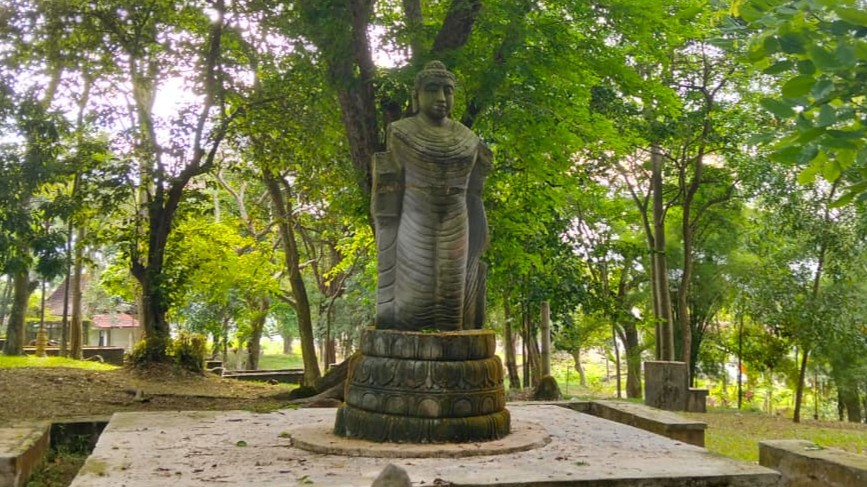

About Bukit Siguntang

Bukit Siguntang is a historic hill about 100 meters high located in Palembang, South Sumatra, Indonesia. It is believed to be the birthplace of the ancient Sriwijaya Kingdom, one of the greatest maritime empires in Southeast Asia from the 7th to the 13th century. The site features ancient tombs, stone structures, and is surrounded by lush greenery. Visitors can hike to the top for panoramic views and explore the cultural significance tied to Malay legends and history.
This hill holds great importance in local culture, with legends of royal figures buried here. It's a popular spot for history enthusiasts and nature lovers.
Location Map
Bukit Siguntang is located in Karanganyar Village, Plaju District, Palembang, South Sumatra. It's easily accessible from the city center, about 15 km away. Use a map app for real-time routes.
Quick Route: From Sultan Mahmud Badaruddin II Airport: 30-45 minutes by car or taxi. From Alang-Alang Terminal: 20-30 minutes. Avoid rush hours for a smooth trip.
Arrival Guide
To reach Bukit Siguntang without difficulty, follow these steps. The site is open to the public and does not require reservations, but visit on weekdays to avoid crowds.
- 1. Transportation: From central Palembang, take Jl. Sudirman east for 10-15 minutes, then turn right onto Jl. Bukit Siguntang. Use public transport like buses or ride-hailing apps for affordable fares.
- 2. Parking: Park in the official area at the foot of the hill (free). Capacity is limited, so arrive early.
- 3. Entry: Pass through the main gate and pay the entrance fee of Rp10,000 per person (free for children). There are information boards at the gate, but use this website for more details.
- 4. Hiking: Follow the marked green path (20-30minutes uphill). The path is easy, but bring a stick if needed. At the summit, enjoy views of the Musi River.
Opening Hours: 08:00-17:00. Safety Tips: Stay healthy, avoid littering, and follow staff instructions.
Royal Tombs at Bukit Siguntang
Bukit Siguntang is home to several ancient graves that are revered by locals as the resting places of legendary figures from the Sriwijaya Kingdom. These tombs are part of Malay folklore and attract pilgrims and tourists. The site includes stone markers and is surrounded by mystical stories.
- Raja Sigentar Alam: The founder king.
- Pangeran Raja Batu Api: The fiery prince.
- Putri Kembang Dadar: The flower princess.
- Putri Rambut Selako: The princess with healing hair.
- Panglima Tuan Junjungan: The loyal commander.
- Panglima Bagus Kuning: The golden warrior.
- Panglima Bagus Karang: The rock-like warrior.
Click a name to learn more:
Raja Sigentar Alam

Raja Sigentar Alam is regarded as the legendary founder and the first ruler of the Sriwijaya Kingdom, an empire that once flourished across the Malay Archipelago. According to oral traditions and local chronicles, he was a wise and visionary leader who united fragmented communities under a single rule centered in Bukit Siguntang. His reign symbolized peace, prosperity, and the beginning of a glorious maritime civilization that connected trade and culture between India, China, and the Nusantara.
The tomb of Raja Sigentar Alam, located atop the serene Bukit Siguntang hill, is believed to be a sacred site that marks the birthplace of Palembang’s royal lineage. Visitors often describe the atmosphere around the tomb as tranquil and filled with spiritual energy. The site serves not only as a historical monument but also as a reminder of the greatness of the Sriwijaya Kingdom and its contributions to Southeast Asian civilization.
Pangeran Raja Batu Api

Pangeran Raja Batu Api, known as the Prince of the Fiery Stone, was a heroic figure and one of the greatest warriors in the history of Sriwijaya. Legends say that he possessed mystical powers to command and control fire, symbolizing courage, strength, and divine protection. He was revered for his unmatched bravery in defending the kingdom from foreign invaders and natural calamities.
His tomb, enshrined at Bukit Siguntang, is believed to radiate a fiery spiritual aura that inspires resilience and power. Locals visit the site to honor his valor and seek strength in overcoming adversity. The tales of Pangeran Raja Batu Api continue to live on as a metaphor for endurance, leadership, and the eternal flame of Sriwijaya’s spirit.
Putri Kembang Dadar

Putri Kembang Dadar, or the Blossoming Flower Princess, is one of the most beloved figures in local folklore. Her beauty, gentleness, and compassion made her a symbol of purity and harmony. She is said to have possessed healing abilities and often helped the poor and the sick, earning the respect of her people and the admiration of the royal court.
Her story reflects the values of kindness, balance, and devotion to nature that characterized the golden age of Sriwijaya. The tomb of Putri Kembang Dadar is adorned with flowers and offerings brought by visitors who seek blessings of health, love, and prosperity. Her legacy continues to remind future generations that true beauty lies in a generous heart and a nurturing soul.
Putri Rambut Selako

Putri Rambut Selako was renowned for her long, shining hair that was said to possess healing powers. According to local legend, her hair could cure diseases, bring good fortune, and protect people from evil forces. She was revered as a spiritual figure, often associated with purity, light, and divine femininity. Her story is deeply connected to the mystical elements of nature worship once practiced by ancient Sriwijaya communities.
Today, her tomb is considered a sacred place for those seeking peace and blessings. Many visitors believe that paying respect to Putri Rambut Selako brings balance and well-being into their lives. Her legend endures as a symbol of spiritual grace and the mysterious connection between humanity and nature.
Panglima Tuan Junjungan

Panglima Tuan Junjungan was a loyal and strategic commander who served under the rulers of Sriwijaya. He is celebrated for his military intelligence, unwavering loyalty, and sense of duty to the empire. Tales of his leadership describe him as a man of discipline who led his troops with fairness and inspired them through personal courage and example.
The tomb of Tuan Junjungan stands as a monument to the values of honor, sacrifice, and patriotism. Pilgrims and historians alike visit this site to pay homage to one of Sriwijaya’s most respected warriors. His name, “Junjungan,” which means “the honored one,” reflects the respect and admiration his people held for him both in life and after his passing.
Panglima Bagus Kuning

Panglima Bagus Kuning, known as the Golden Warrior, is remembered for his unmatched bravery and noble character. His name “Kuning,” meaning “golden,” symbolizes purity, honor, and enlightenment. As one of the trusted generals of Sriwijaya, he fought with both strength and wisdom, ensuring the safety of the kingdom’s borders and the welfare of its people.
His tomb reflects his golden legacy—a symbol of moral integrity and unwavering courage. Local traditions regard the site as a place where one can draw inspiration for inner strength and clarity of purpose. Panglima Bagus Kuning’s story teaches the eternal lesson that true greatness lies in serving one’s people with a heart as pure as gold.
Panglima Bagus Karang

Panglima Bagus Karang was known as the steadfast and unyielding warrior of Sriwijaya. The word “Karang,” meaning “rock,” symbolizes his firm determination and resilience in the face of challenges. He was often described as a protector of the kingdom’s integrity—guarding the land, sea, and people from all threats, both seen and unseen.
His tomb serves as a tribute to strength, endurance, and unwavering loyalty. Visitors come to reflect upon his legacy and the timeless message of perseverance that his life represents. Just as the coral rock withstands the ocean’s waves, Panglima Bagus Karang’s spirit stands as a reminder that courage and steadfastness are the foundation of a lasting civilization.